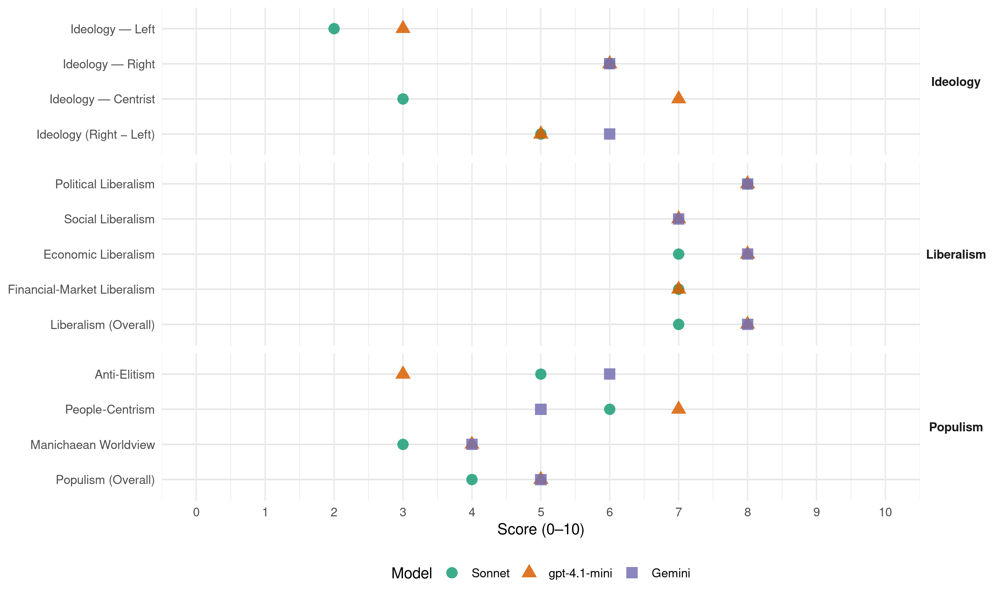

IRL (Estonia, 2007)
manifesto_id 83611_200703
Get full text: This site shows derived annotations and short verbatim quotes only. The full manifesto text is © Manifesto Project / WZB — obtain it via manifesto-project.wzb.eu using the manifesto_id above.
Headline scores
| Dimension | Sonnet | gpt-4.1-mini | Gemini |
|---|---|---|---|
| Populism (Overall) | 4.0 | 5.0 | 5.0 |
| Anti-Elitism | 5.0 | 3.0 | 6.0 |
| People-Centrism | 6.0 | 7.0 | 5.0 |
| Manichaean Worldview | 3.0 | 4.0 | 4.0 |
| Ideology (Right − Left) | 5.0 | 5.0 | 6.0 |
| Liberalism (Overall) | 7.0 | 8.0 | 8.0 |
| Political Liberalism | 8.0 | 8.0 | 8.0 |
| Social Liberalism | – | 7.0 | 7.0 |
| Economic Liberalism | 7.0 | 8.0 | 8.0 |
| Financial-Market Liberalism | 7.0 | 7.0 | – |
Evidence per dimension
Economic Liberalism
Gemini · score 8.0 · verified · chunk 1
“hoida küll avatud turumajandust, maksud madalad”
Eestile seni edu toonud majandusmudel hakkab ennast ammendama. Jätkuvalt tuleb hoida küll avatud turumajandust, maksud madalad ja riigieelarve tasakaalus
gpt-4.1-mini · score 8.0 · verified · chunk 1
“Hoiame valitsussektori eelarve tasakaalus ja laene ei võta.”
Majandus aitab heaolu tagada mitmel viisil. Tugev majandus rahuldab inimeste esmased vajadused ning loob vahendid hariduse, tervishoiu, elukeskkonna ja kõigi teiste õnne alustalade tarvis. Kuid samal ajal on majandus ka ise üks õnne teguritest, pakkudes inimestele võimalust olla ettevõtlik ning ennast teostada. Hoiame valitsussektori eelarve tasakaalus ja laene ei võta. Euro maksimaalselt kiireks kasutuselevõtuks töötame välja reaalse riikliku programmi.
Sonnet · score 7.0 · verified · chunk 1
“hoida küll avatud turumajandust, maksud madalad”
Jätkuvalt tuleb hoida küll avatud turumajandust, maksud madalad ja riigieelarve tasakaalus, ent see pole küllaldane tagamaks kiire majanduskasvu ning heaolu tõusu jätkumist.
Financial-Market Liberalism
gpt-4.1-mini · score 7.0 · verified · chunk 1
“Anname inimesele endale võimaluse valida, kas ta investeerib kodu rajamisse, firma loomisesse või väärtpaberitesse.”
Maksupoliitika peab eelkõige soodustama tahet teha tööd, säästma tulevikuks, investeerima ja looma uusi väärtusi ning takistama seda tegemast loodusekeskkonna hävitamise arvelt. Eesti maksusüsteem peab olema lihtne, stabiilne ja igaühele arusaadav. Madalate üldiste maksumäärade hoidmiseks ja tarbetu bürokraatia vohamise vältimiseks tuleb maksuerandite arv viia miinimumini. Anname inimesele endale võimaluse valida, kas ta investeerib kodu rajamisse, firma loomisesse või väärtpaberitesse.
Sonnet · score 7.0 · verified · chunk 1
“Seame eesmärgiks Euroopa Majandus- ja Rahaliidu täisliikmelisuse”
Jätkame Eestile edu taganud konservatiivset rahanduspoliitikat ja tasakaalustatud eelarvepoliitikat. Seame eesmärgiks Euroopa Majandus- ja Rahaliidu täisliikmelisuse ja ühisraha euro võimalikult kiire kasutusele võtmise.
Political Liberalism
Gemini · score 8.0 · verified · chunk 1
“demokraatlikult arenev ja tugeva kodanikuühiskonnaga Eesti”
Inimene on õnnelik, kui ta saab elada vabal maal ning osaleda ühiskonnaelu korraldamises. Meie kolmas valik on demokraatlikult arenev ja tugeva kodanikuühiskonnaga Eesti.
gpt-4.1-mini · score 8.0 · verified · chunk 1
“Peame toimiva kodanikuühiskonna kujundamist ja sellele tugineva poliitilise kultuuri edendamist Eesti demokraatliku arengu võtmeküsimuseks.”
Toetame kodanikele tuginevat rahvuslust ja isamaa-armastust, toetame vähemuste kaasamist ja nende kultuurilise identiteedi arengut. Kaitseme meediavabadust ja väldime meediamonopolide teket. Peame toimiva kodanikuühiskonna kujundamist ja sellele tugineva poliitilise kultuuri edendamist Eesti demokraatliku arengu võtmeküsimuseks.
Sonnet · score 8.0 · verified · chunk 1
“Kaitseme meediavabadust ja väldime meediamonopolide teket”
Seisame avatud ja kaasava valitsemise eest, vastandudes korporatiivsusele. Peame oluliseks aktiivse sallimatuse kujundamist igasuguste võimu väärtarvituste suhtes. Toetame kodanikele tuginevat rahvuslust ja isamaa-armastust, toetame vähemuste kaasamist ja nende kultuurilise identiteedi arengut. Kaitseme meediavabadust ja väldime meediamonopolide teket.
Liberalism (Overall)
Gemini · score 8.0 · verified · chunk 1
“hoida küll avatud turumajandust, maksud madalad”
Eestile seni edu toonud majandusmudel hakkab ennast ammendama. Jätkuvalt tuleb hoida küll avatud turumajandust, maksud madalad ja riigieelarve tasakaalus
gpt-4.1-mini · score 8.0 · verified · chunk 1
“Peame toimiva kodanikuühiskonna kujundamist ja sellele tugineva poliitilise kultuuri edendamist Eesti demokraatliku arengu võtmeküsimuseks.”
Toetame kodanikele tuginevat rahvuslust ja isamaa-armastust, toetame vähemuste kaasamist ja nende kultuurilise identiteedi arengut. Kaitseme meediavabadust ja väldime meediamonopolide teket. Peame toimiva kodanikuühiskonna kujundamist ja sellele tugineva poliitilise kultuuri edendamist Eesti demokraatliku arengu võtmeküsimuseks.
Sonnet · score 7.0 · verified · chunk 1
“hoida küll avatud turumajandust, maksud madalad”
Jätkuvalt tuleb hoida küll avatud turumajandust, maksud madalad ja riigieelarve tasakaalus, ent see pole küllaldane tagamaks kiire majanduskasvu ning heaolu tõusu jätkumist.
Anti-Elitism
Gemini · score 6.0 · verified · chunk 1
“Seisame vastu üha kasvavale korporatiivsusele”
demokraatlikult arenev ja tugeva kodanikuühiskonnaga Eesti. Seisame vastu üha kasvavale korporatiivsusele, avalikule ringkäendusele ja klikiühiskonna kujunemisele
gpt-4.1-mini · score 3.0 · verified · chunk 1
“Seisame vastu üha kasvavale korporatiivsusele, avalikule ringkäendusele ja klikiühiskonna kujunemisele – võtame võimu rahva kätte tagasi!”
Meie kolmas valik on demokraatlikult arenev ja tugeva kodanikuühiskonnaga Eesti. Seisame vastu üha kasvavale korporatiivsusele, avalikule ringkäendusele ja klikiühiskonna kujunemisele – võtame võimu rahva kätte tagasi! Eesti ühiskonna arenguressurss on TERVE EESTI, mis tagab kõigile oma liikmetele võrdsed võimalused oma isikliku õnne leidmiseks.
Sonnet · score 5.0 · verified · chunk 1
“võtame võimu rahva kätte tagasi”
Seisame vastu üha kasvavale korporatiivsusele, avalikule ringkäendusele ja klikiühiskonna kujunemisele – võtame võimu rahva kätte tagasi!
Ideology — Centrist
gpt-4.1-mini · score 7.0 · verified · chunk 1
“Meie kolmas valik on demokraatlikult arenev ja tugeva kodanikuühiskonnaga Eesti.”
Inimene on õnnelik, kui ta saab elada vabal maal ning osaleda ühiskonnaelu korraldamises. Meie kolmas valik on demokraatlikult arenev ja tugeva kodanikuühiskonnaga Eesti. Seisame vastu üha kasvavale korporatiivsusele, avalikule ringkäendusele ja klikiühiskonna kujunemisele – võtame võimu rahva kätte tagasi!
Sonnet · score 3.0 · verified · chunk 1
“Täna vajame valitsust, kes kaitseks Eesti huve”
Täna enam ei piisa seniste viljade nautimisest lootuses, et Eestil läheb hästi iseenesest. Täna tuleb valida õige suund ja seada eesmärgiks õnnelik rahvas. Täna vajame valitsust, kes kaitseks Eesti huve.
Ideology — Left
gpt-4.1-mini · score 3.0 · verified · chunk 1
“Peame tähtsaks tugevdada riigi võimekust avastada varjatud olemusega kuritegusid, nagu korruptsiooni- ja majanduskuriteod”
Seisame läbipaistva ja õiglase Eesti eest, kus on tagatud inimeste võrdne kohtlemine ja põhiõiguste kaitse. Riiki saab muuta läbipaistvamaks aga vaid paljude abinõude koosmõjus - suurendades avalikustamist, lihtsustades menetlusi, tõstes järelevalvete toimivust ja korruptsiooni avastamisele eraldatavat raha. Peame tähtsaks tugevdada riigi võimekust avastada varjatud olemusega kuritegusid, nagu korruptsiooni- ja majanduskuriteod - muidu jäävad võimu kuritarvitajate teod endiselt “juriidiliselt korrektseteks”.
Sonnet · score 2.0 · verified · chunk 1
“Tõstame puuetega inimeste toetusi”
Tööhõive edendamiseks kompenseerime raske ja sügava puudega inimesele peale kooli lõpetamist õppelaenu 100% ulatuses vastavalt tagasimakse graafikule. Tõstame puuetega inimeste toetusi.
Ideology (Right − Left)
Gemini · score 6.0 · verified · chunk 1
“Eesti rahva, keele ja kultuuri säilimise”
TERVE PERE! Inimene on õnnelik, kui ta saab ennast teostada, rakendada oma andeid ja loovust. Meie teine valik on ettevõtlikkust, loovust ning koostööoskusi edendav paindlik haridussüsteem
gpt-4.1-mini · score 5.0 · verified · chunk 1
“Seisame vastu üha kasvavale korporatiivsusele, avalikule ringkäendusele ja klikiühiskonna kujunemisele – võtame võimu rahva kätte tagasi!”
Meie kolmas valik on demokraatlikult arenev ja tugeva kodanikuühiskonnaga Eesti. Seisame vastu üha kasvavale korporatiivsusele, avalikule ringkäendusele ja klikiühiskonna kujunemisele – võtame võimu rahva kätte tagasi! Eesti ühiskonna arenguressurss on TERVE EESTI, mis tagab kõigile oma liikmetele võrdsed võimalused oma isikliku õnne leidmiseks.
Sonnet · score 5.0 · verified · chunk 1
“Jätkame konservatiivset kodakondsus- ja immigratsioonipoliitikat”
Jätkame konservatiivset kodakondsus- ja immigratsioonipoliitikat. Jätkame sihikindlalt eesti keeleruumi laiendamist ja kindlustamist, arendades selleks seadusi ja tugevdades järelevalvet.
Ideology — Right
Gemini · score 6.0 · verified · chunk 1
“Eesti rahva, keele ja kultuuri säilimise”
TERVE PERE! Inimene on õnnelik, kui ta saab ennast teostada, rakendada oma andeid ja loovust. Meie teine valik on ettevõtlikkust, loovust ning koostööoskusi edendav paindlik haridussüsteem, mis ühelt poolt annab igale noorele võimaluse eneseteostuseks ja toimetulekuks ning teisalt tagab Eestile konkurentsivõimelise koha teadmistepõhises maailmamajanduses. Eesti riigi ja rahva majandusliku edenemise kindlustab TERVE MÕISTUS! Inimene on õnnelik, kui ta saab elada vabal maal ning osaleda ühiskonnaelu korraldamises. Meie kolmas valik on demokraatlikult arenev ja tugeva kodanikuühiskonnaga Eesti. Seisame vastu üha kasvavale korporatiivsusele, avalikule ringkäendusele ja klikiühiskonna kujunemisele – võtame võimu rahva kätte tagasi! Eesti ühiskonna arenguressurss on TERVE EESTI, mis tagab kõigile oma liikmetele võrdsed võimalused oma isikliku õnne leidmiseks. Eesti on osake Euroopast ja üleilmastuvast maailmast ning seisab silmitsi tõsiste väljakutsetega. Me suudame nendele väljakutsetele vääriliselt vastata, tuginedes tervele perele, tervele mõistusele ja tervele riigile. Täna enam ei piisa seniste viljade nautimisest lootuses, et Eestil läheb hästi iseenesest. Täna tuleb valida õige suund ja seada eesmärgiks õnnelik rahvas. Täna vajame valitsust, kes kaitseks Eesti huve. I. TERVE PERE JA TERVE RAHVAS Inimene on õnnelik, kui tal on keegi, kellest hoolida ja kellele toetuda. Läbi aegade on kõige tänuväärsemaks lähisuhete allikaks olnud perekond. Iga tugev pere teeb ka ühiskonna tugevamaks ja õnnelikumaks. Täna ei ole Eesti ühiskond lapsesõbralik. Meie eesmärk on, et ta selleks saaks, sest perede loomine ja laste sünd ei sõltu mitte nii väga palju ühest või teisest meetmest ja toetusest, vaid sellest, kui hästi ühiskond tervikuna suhtub lastesse ja lastega peredesse. Me soovime pikaks ajaks kindlustada Eesti rahva heaolu, järelikult peab riik kõigis otsustes, sealhulgas riigieelarve jaotamisel, seadma esikohale laste ja perede huvid. Õnne tegurite hulka kuulub hea tervis. Seame eesmärgiks, et Eesti inimene püsiks võimalikult terve ja elujõuline. Terved eluviisid ja haiguste ennetamine tagavad eluga rahulolu. Arenenud maailmas on kõige suuremaks ohuks elukvaliteedile kujunenud tundeelu häired (depressioonid jms), mistõttu käivitame ennetuskava rahva vaimse tervise hoidmiseks. Et olla õnnelik, peab inimene tundma end vajalikuna. Sotsiaalpoliitikas on meie põhiline ülesanne luua paindlikke võimalusi, et ka väiksema töövõimega inimesed saaksid ühiskonnale oma panuse anda. IGA LAPS ON TÄHTIS! Et Eesti püsiks, peab püsima Eesti rahvas. Demograafiline olukord on meie lähiaja suurim ning samas järsult süvenev probleem. Lahendus saab tulla ainult seeläbi, et Eesti peredes sünnib rohkem lapsi. Soovime luua kõikidele peredele kindlustunde ning igale lapsele turvalise ja arendava kasvukeskkonna. Vaid õnnelikes kodudes ja tervetes peredes on kaikkiidel põlvkondadel hea elada. Selleks: Maksuvabastus iga lapse pealt. Kehtestame täiendava maksuvaba tulu tulumaksuvaba miinimumi ulatuses alates esimesest lapsest. Huviharidus on tähtis ja pered vajavad selleks toetust: Kindlustame igale koolilapsele vähemalt kaks tundi nädalas tasuta huviharidust. Katame riigi poolt põhikoolis õppija õppevahendite ja koolitoidu kulu. Suurem pere vajab rohkem toetust. Tõstame kolmanda ja iga järgmise lapse toetuse 2000 kroonile kuus. Noorele perele oma kodu! Käivitame riigi toetusprogrammi lastega peredele, kes on võtnud eluasemelaenu oma kodu ostmiseks või renoveerimiseks. Toetuse ajaline ulatus ning soodustatud isikule esitatavad tingimused kehtestatakse eraldi seadusega. Isale lapsepuhkus. Väärtustame isade kaasamist laste kasvatamisse: maksame lapse sünni puhul isale kahenädalase täiendava lapsepuhkuse eest sarnaselt vanemahüvitisega palka. Maksame kuue- ja enamalapselise pere vanemale riigi poolt palka. Lastehoid peab olema kättesaadav kõikidele peredele. Anname lastevanematele reaalse võimaluse valida sõime, lasteaia ja koduhoiu vahel. Asutame riikliku fondi lapsele elatise tagamiseks. Sellest tehakse väljamakseid last kasvatavale üksikvanemale. Kasvatamisest kõrvalehoidvalt vanemalt nõuab kohtu poolt väljamõistetud raha sisse riik. Toetame pere- ja noortenõustamiskeskusi. Igal lapsel on õigus turvalisele elule: toetame ema-lapse varjupaikade tegevust ja tugiisiku teenust. Kehtestame lastekodust ja kasuperest iseseisvasse ellu astumise toetuseks 12 000 krooni. ROHKEM TERVENA ELATUD AASTAID! Täna on Eesti inimeste keskmine eluiga liiga lühike. Meie eesmärk on luua aastaks 2015 võimalused ja tingimused keskmise eluea tõusuks meestel 73 ja naistel 80 eluaastani. Isamaa ja Res Publica Liidu kaks peamist eesmärki tervise vallas on luua järgmise valitsusperioodi jooksul eeldused selleks, et viia keskmine eluiga Eestis Euroopa keskmisele tasemele ja oluliselt vähendada alkoholi ja tubaka tarbimist Eestis. Et seda ambitsioonikat eesmärki saavutada, ei piisa üksnes paremast ravist. Veelgi tähtsam on haiguste ennetamine ja tervete eluviiside edendamine. Jätkame seniseid terviseprogramme (südame- ja veresoonkonna haigused, AIDS) ja tagame neile püsiva finantseerimise, lisaks käivitame uued programmid traumade ja vähihaiguste vastu ning vaimse tervise hoidmiseks. Oluliselt tuleb vähendada alkoholi ja tubaka tarbimist. Jätkame süsteemset narkoennetustööd. Spordiga tegelemist tuleb soodustada. Aitame kaasa liikumisharrastuse kujunemisele, toetades rahvaspordiks vajalike rajatiste loomist. Igal põhikoolil ja gümnaasiumil peavad olema nende vajadusi rahuldavad sportimistingimused. Tagame, et Haigekassa raha jääks inimeste ravimiseks. Eraldame töövõimetushüvitiste maksmise Haigekassa tänastest kohustustest. Taastame tervishoiu juhtimises selge poliitilise vastutuse. Parandame tervishoiuteenuste kättesaadavust. Hoidmaks arste ja õdesid Eestis, toetame mitmeaastaseid palgaleppeid, lähtudes konkurentsivõimelisest töötasust. Algatame seniste terviseprogrammide kõrval täiendavad ennetusprogrammid traumade ja vähihaiguste ennetamiseks ning vaimse tervise edendamiseks. Eraldame riigieelarvest kohalike omavalitsuste tulubaasi täiendavaid vahendeid hooldusravi kaasfinantseerimiseks. Toetame hammaste tervise parandamist lisaks Haigekassapoolsele kompensatsioonile ühekordse täiendava 1000-kroonise toetusega, mida on võimalik taotleda kolme aasta jooksul. Pöörame erilist tähelepanu laste hambaravile. Võimaldame seni vanaduspensionäridele mõeldud hambaproteesihüvitist ka töövõimetuspensionäridele. Töötame välja riiklikku alkoholipoliitika. Seame mõõdetavad eesmärgid alkoholitarbimise vähendamiseks. Keelustame jaekaubanduses öise alkoholimüügi. Piirame alkoholireklaami. Näeme alkoholi- ja tubakaaktsiisi tõstmist meetmena alkoholi ja tubaka liigtarbimise vähendamiseks. Karmistame tubakaseadust, seades eesmärgiks passiivse suitsetamise vähendamise. Vabastame tööandjad erisoodustusmaksust töötajate sportimise toetamisel. Käivitame spordi üleriigilise arengukava, mis annab tervikliku ülevaate nii lähematest kui ka pikemaajalistest prioriteetidest ja vajadustest. Eraldame rohkem toetust laste-, noorte- ja erivajadustega inimeste spordile. ABIVAJAJAST TOIMETULIJAKS! Me usume inimese, tema võimesse ise toime tulla ja valikuid teha. Teame, et igaühel see alati ei õnnestu. Ühiskond peab hättasattunuid ja mahajääjaid järele aitama. Parim sotsiaalpoliitika on tööpoliitika. Tegutseme selle nimel, et inimesed leiaksid tööd, saaksid tunda end kasulikuna, tulla ise toime ning anda oma panuse ühiskonna arengusse. Selleks: Muudame pensioniindeksit selliselt, et eakad saavad majanduskasvust rohkem osa, mitte ei pea ootama poliitikute lubadusi erakorraliseks pensionitõusuks. Muudame riikliku vanaduspensioni pensionikindlustuse aastakoefitsientide arvestust selliselt, et vähemasti pooled Eesti töötegijatest saaksid pensionikindlustuse aastakoefitsiendiks ühe. Võimaldame transporditoetust erivajadustega inimestele, kes ei saa kasutada ühiskondlikku transporti, ent soovivad õppida ametit ning käia tööl. Anname kohalikule omavalitsusele 10% ulatuses toimetulekutoetuse kogusummast täiendavaid vahendeid inimeste abistamiseks. Algatame vastastikuse abistamise lihtsustamiseks nn abiveebi, kus on võimalik teada anda sellest, mis omal üle, kuid mis teistele ära võib kuluda. Toetame eraalgatust hoolekandeteenuste osutamisel. Lihtsustame okupatsioonirežiimide poolt represseeritud isikute seaduses ettenähtud tervisetoetuste maksmise korda ning ühendame kõik senised toetused üheks aastatoetuseks. Tööhõive edendamiseks kompenseerime raske ja sügava puudega inimesele peale kooli lõpetamist õppelaenu 100% ulatuses vastavalt tagasimakse graafikule. Tõstame puuetega inimeste toetusi. II. TERVE MÕISTUS Rahva heaolu seisukohalt on haridus kõikide teiste valdkondade alus, sest see määrab, kui õnnelikuks kujuneb järgmine põlvkond ja kujundab isamaalistel ja kristlikel põhimõtetel tuginevat väärtussüsteemi. Haridussüsteem saab olla nii hea, kui head on õpetajad. Õpetaja amet on kõige vastutusrikkam amet üldse, sest õpetaja kätes on klassitäie laste edasine elutee. Riik peab hakkama õpetajat usaldama, hindama teda kui isiksust ja vääriliselt tasuma tema vastutuse eest. Iga inimene on ainulaadne. Seetõttu on valikuvabadus hariduses tähtsam kui ühelgi muul elualal. Riik peab leidma üha rohkem võimalusi, et aidata kõigil annetel maksimaalselt välja areneda. Selleks tuleb pakkuda valikuvõimalusi igale inimesele ja igal haridustasemel, nii haridusasutuste sees kui ka nende vahel. HARIDUS TOOB ÕNNE! Eesti rahvas ja tema iseseisvus püsib haritud ühiskonnaliikmetel. Meie haridussüsteemi ülesanne on anda kõigile võimalus omandada teadmisi ja õppida kogu elu. Kooli ülesanne on eelkõige toetada lapse arengut. Nende ülesannete täitmine nõuab ühiskonnalt kvaliteetse hariduse selget tähtsustamist kõigi teiste poliitikavaldkondade üleseks prioriteediks. See väljendub hariduse, teaduse ja innovaatika soodustamises ning eelisrahastamises nii headel kui ka halbadel aegadel. Haritus on ka parim eeldus oma tervise eest seismiseks, mis omakorda tagab hea elujärje ja rahulolu saavutamiseks. Selleks: Koostame riikliku pikaajalise haridusstrateegia. Käivitame ja hoiame ülal laiapõhjalist arutelu Eesti haridussüsteemi arenguteede üle. Vaatame läbi kõik seni kehtestatud ning uuendatud riiklikud arengukavad ja strateegiad ning viime need ellu. Loome paindliku õppesüsteemi, mis pakub valikuvõimalusi ja kindlustab probleemideta liikumise ühelt haridustasemelt teisele ning kutseõppest üld- ja kõrgharidussüsteemi. Eri õppevormid sisaldavad alati tugevat üldhariduslikku komponenti, mis valmistab inimese ette eluks ja edasisteks valikuteks teadmispõhises ühiskonnas. Kehtestame kooli õppekaval põhineva rahastamismudeli. Pearaha suurus sõltub õppevormist ja kooliastmest. Kapitalikomponent sisaldub pearahas. Kogu riigieelarvest koolile eraldatav raha on sihtotstarbeline ja peab seega jõudma koolini. Õppekulude katmisel käsitleme koole ühtmoodi, sõltumata omandivormist. Hariduskorralduse arendamisel toetume õpetajatele ja õppejõududele, võttes arvesse nende kogemusi ja tagasisidet kui määravaid suuniseid õpikeskkonna ja hariduspoliitika kujundamisel. Haridusotsuste elluviimiseks kaasame rohkem tähtajalisi, teadlastest, tegevõpetajatest jt asjatundjatest koosnevaid töörühmi. Võimalusel delegeerime pideva iseloomuga ülesandeid kodanikuühendustele. Käivitame riigi haridusuuringute pikaajalise kava ning näeme selleks ette ressursi. Teostajad valime avaliku konkursi kaudu. Edendame haridusteadust. Töötame välja ja viime ellu kõiki õppetasemeid ja -liike hõlmava e-õppe riikliku programmi ehk Tiigrihüppe II, millega nähakse ette kaasaegse tehnilise varustuse soetamine kõikidele koolidele. Arvuti igale lapsele! Arvuti on tänapäeval üldhariduse omandamiseks hädavajalik õppevahend, mida pole paljudel vanematel aga võimalik oma lastele osta. Algatame riikliku programmi, millega varustatakse põhikooli viimase klassi õpilased sülearvutitega. Toome madalseisust välja isamaalise kasvatuse koolides ja noorteorganisatsioonides. Muu hulgas valmistatakse koolidele ette senisest rohkem noorkotkaste ja kodutütarde juhte ja makstakse neile konkurentsivõimelist palka. Ettevõtliku elulaadi toetamiseks töötame välja ja rakendame kõigil haridustasemetel ettevõtlusõppe strateegia. Arvestame seda ka õpetajakoolituses. Senisest enam suuname õppes tähelepanu loovkomponentidele – uurimuslikule ja loomingulisele tegevusele. Tagame riigi toetuse laste huviharidusele. Tugevdame laste kunsti- ja muusikakoolide võrku. ÕPETAJAAMET AUSSE! Tõstame nooremõpetaja palga alammäära Eesti keskmisele tasemele. Võtame vastu Riigikogu otsuse, milles näeme ette õpetajate vähemalt 15-protsendilise palgatõusu viis aastat järjest. Tagame vastavate seaduste rakendamisega, et omavalitsused kindlustavad kõigile lastele lasteaiakohad. Võimaldame kõigile lastele ühe aasta jooksul enne kooliminekut alusõpet ning tagame omavalitsuste kaudu kõigile soovijaile vastava teenuse kas lasteaia või eelkooli näol, suurendamata rühmade lubatud suurust. Tõstame lasteaiaõpetajate palku, kehtestades nende üleriigilise alammäära. Toetame riiklikult eraalgatusel põhinevat programmi “Vaata maailma II”, millega pakutakse kõikidele eagruppidele baastasemel IT-koolitust. Töötame välja põhikooli ja gümnaasiumi uuendatud õppekavad ja kehtestame need alates aastast 2010, arendades neid edasi ka hiljem. Toome riikliku õppekava üldosa kinnitamise Riigikogu pädevusse. Kehtestame kogu põhikooli ulatuses klassitäituvusnormiks 24 õpilast, säilitades eritingimuste korral võimaluse paindlikumaks lähenemiseks. Maksame esmakordselt tööle asuvale pedagoogilise kõrgharidusega õpetajale 200 000 krooni stardiraha. See on laen, mis kustub kuueaastase pedagoogitöö jooksul. Õpetaja sissetulek peab tunnikoormuse kõrval oluliselt sõltuma ka klassijuhatamise, individuaalse juhendamise, tundideks valmistumise ja muu lisatöö mahust. Tõstame esile õpetajaid, kes kasutavad aktiivõppemeetodeid ja toetavad õpilaste sotsiaalsete oskuste arenemist. Õpetajatele kutse omistamise ja kutsekvalifikatsioonisüsteemi kujundamise anname üle õpetajate kutseorganisatsioonile. Õpetajatöö eelduseks põhikoolis seame esmalt isikuomadused ja seejärel pedagoogilise hariduse ning ainealase koolituse. Vähendame oluliselt õpetajalt ja kooli juhtkonnalt nõutud bürokraatlikku asjaajamist, jättes rohkem aega pedagoogiliseks tegevuseks. Tõstame eesti keele õppe taset venekeelsetes lasteaedades, alg- ja põhikoolides. Toetame keelekümbluse sisseviimist võimalikult paljudesse venekeelsetesse koolidesse. Viime ellu riiklikult rahastatud programmi, mille eesmärgiks on venekeelsete gümnaasiumide üleminek eesti õppekeelele aastatel 2007-2011. KUTSE- JA KÕRGHARIDUS KVALITEETSEKS! Kutseõppeasutuste arendamiseks rahastame neid gümnaasiumitega võrreldes vähemalt poolteisekordse pearahaga. Tagame riigi-, munitsipaal- ja erakutseõppeasutuste võrdse kohtlemise õppekulude rahastamisel. Sõlmime arenguvõimeliste kutseõppeasutustega pikaajalised tellimus- ja rahastamislepingud. Integreerime senisest enam üldkeskharidust ja kutsekeskharidust (õppekavaarendus, õppekorraldus, juhtimine). Suurendame oluliselt riiklikult rahastatavate magistriõppekohtade arvu. Loome aluse õppekoha baasmaksumuse tõusu kaudu õppejõudude palga taseme kasvu üldhariduskoolide õpetajatega võrreldavatel alustel. Viime baasmaksumusse ka põhivahendite amortisatsiooni katva komponendi ja käivitame infrastruktuuri investeeringuprogrammi EL tõukefondide vahendite toel. Kehtestame õppekavadele ja õppeasutustele kõrghariduse kõikidel astmetel praegusest kõrgemad kvaliteedinõuded ja tagame nendest kinni pidamise. Seome kõrgkoolide rahastamise saavutatud kvaliteeditasemega. Käivitame ingliskeelsed õppekavad nendel erialadel, mis on meil eriti hästi arenenud. Loome lisaks kehtivale tulemusstipendiumide süsteemile ka riiklikult hallatava õppetoetuste süsteemi kõigile toetust vajavatele üliõpilastele, et nad saaksid pühenduda õppe- ja teadustegevusele. Suurendame sihikindlalt tulemuslikkusel põhineva doktoriõppe, sh doktorikoolide rahastamist, seades eesmärgiks jõuda 200 doktorikraadi kaitsmiseni aastal 2010. Arendame kutseõppeasutused täiskasvanute koolituskeskusteks, rakendades nende kaudu tööturu koolitusmeetmeid. Arendame välja elukestva õppe süsteemi. TEADUSE RAHASTAMINE RIIGIKAITSEGA SAMALE TASEMELE! Eesti konkurentsivõime mootoriks on haritud rahvas ja tark majandus. Selleks: Suurendame T&A kulutuste osakaalu 2%-ni SKT-st, stimuleerides samal ajal erasektori osalust selles vähemalt 50%-ni kogumahust. Realiseerime Arengufondi asutamisega seatud ülesanded, keskendudes eelkõige innovatsiooniteadlikkuse suurendamisele ja avaliku sektori, akadeemilise kogukonna ja erasektori koostöö tihendamisele. Käivitame Eesti peamiste sotsiaal-majanduslike probleemide lahendamisele orienteeritud riiklikud uurimisprogrammid, tagades seeläbi teadmistepõhise lähenemise avaliku poliitika kujundamisele. Tegeleme sihikindlalt kõrgtehnoloogilise majandussektori tugevdamisega, soosides vastavaid investeeringuid. Toetame riiklike meetmetega ja Euroopa Liidu struktuurifondi vahendeid kaasates Eesti teaduse ja ettevõtluse rahvusvahelist innovatsioonialast koostööd. Suurendame eelistatult ja programmipõhiselt rahvusteadustele suunatavaid vahendeid, nähes neid ette eriti Eesti rahva, maa ja keele uurimisele. Teaduse rahastamisel järgime rahvusvahelisest konkurentsivõimest lähtuvaid kvaliteediprintsiipe ja kontsentreerime vahendeid läbilöögisuutlikesse valdkondadesse. Jätkame teaduse tippkeskuste väljaselgitamist ja premeerimist. Seisame avatud Euroopa teadusruumi kujundamise eest, sh kõikide liikmesriikide teadusprogrammide avamise eest teiste liikmesriikide partneritele. Eesmärkide saavutamisel peame esmaoluliseks teaduse infrastruktuuri tugevdamist ja rahvusvaheliselt konkurentsivõimelise palgataseme tagamist tippspetsialistidele. Käivitame projekti “Ajud koju!” eesmärgiga anda parimatele välismaal töötavatele teadlastele kaasaegse infrastruktuuri loomisega motivatsioon kodumaale tagasi pöörduda. VAIMULT SUUREKS! Eesti kultuur on teinud meid vaimult suureks. Eelkäijad on meile jätnud tohutu kultuuripärandi ja kogemuse. Meie kohus on seda hoida, edendada ja säilitada järeltulevatele põlvedele. Meie poliitikat juhib arusaam, et kultuur on loova majanduse pärisosa ning Eesti rahva tulevase jõukuse allikas. Tagame kultuuripoliitika kaudu eesti keele ja eesti kultuuri säilimise, kultuuriväärtuste senisest parema kättesaadavuse, suurendame ühiskonna sidusust vaimsete väärtuste kaudu ja tagame eesti kultuurile senisest tugevama riikliku toetuse. Selleks: Kahekordistame Kultuurkapitali kaudu jagatava raha hulka, et oluliselt suurendada loomingutoetusteks ja stipendiumideks jagatava raha hulka, muutes selleks vajalikke seadusi. Toetame kõiki kauneid kunste, samuti laiapõhjalise Kaunite Kunstide Akadeemia loomise algatust. Toetame eesti algupärase lastekirjanduse väljaandmist ja eestikeelsete lastefilmide tootmist. Muudame raamatukogudes, riiklikes muuseumides ja arhiivides, munitsipaal- ja eramuuseumides, tele- ja raadioarhiivis oleva Eesti kultuuripärandi digitaliseerimisega avalikkusele kättesaadavaks. Arendame miljöö- ja keskkonnateadlikkust. Tervikliku hoonestusega linnaasumeid ei lõhuta ning vanu mõisaparke ei ehitata täis. Paneme piiri odavale röövplaneerimisele – õnnelikud inimesed vajavad harmoonilist keskkonda. Tähistame kõik riiklikud kultuurimälestised Euroopa traditsioonide kohaselt. Anname kohalikele omavalitsustele voli võtta kaitse alla kohaliku tähtsusega kultuurimälestisi. Suurendame maakondadele eraldatavat kultuuriväärtuste hoidmiseks mõeldud tuge. Laiendame pühakodade ja mõisakoolide kordategemise riiklikku programmi. Suurendame iga-aastasi eraldisi Muinsuskaitseametile vastavuses eelarve kasvule. Asutame mälestiste omanike toetamiseks Muinsuskaitse Sihtrahastu. Suurendame rahvaraamatukogude raamatute soetamise raha, eriti hoolitseme väärtkirjanduse, kultuuri- ja lasteajakirjade ning lasteraamatute kättesaadavuse eest. Loome Eesti Rahva Muuseumi ja Eesti Kirjandusmuuseumi taasühendamisega ühtse rahvusmuuseumi ja ehitame sellele uue muuseumihoone. Toetame Eesti kultuuri tutvustamist maailmas, k.a meie väärtkirjanduse tõlkimist võõrkeeltesse. Tippkultuuri kõrval väärib rohkem tähelepanu Eesti rahvakultuur, eriti laulu- ja tantsupidude traditsioon. Pöörame rohkem tähelepanu hõimurahvaste kultuuri ja keele kaitsmisele ning tutvustamisele maailmas. Leiame võimalusi Euroopa Liidu struktuurifondide kaasamiseks kultuuriprojektidesse. EESTI KEEL SELGEKS! Emakeel on meie identiteedi üks aluseid. Eesti keel on üks vähima kõnelejaskonnaga keeltest, millel on kõik kaasaegse kultuurkeele tunnused. Me tahame, et eesti keel areneks ning eesti keele kasutajaid oleks järjest rohkem. Selleks: Tagame Eesti riigis ja omavalitsustes eestikeelse asjaajamise. Jääme kindlaks senistele keelepoliitika põhimõtetele ja tagame nende elluviimise. Koostame uue, kaasajastatud keeleseaduse. Korraldame Keeleinspektsiooni ümber Keeleametiks. Anname sellele täiendavad volitused keelejärelevalve tõhustamisel ja keelepoliitika kujundamisel. Nõuame avalikult võimult korrektse ja kvaliteetse eesti keele kasutamist. Muudame keelestrateegia riiklikult tähtsaks ja toimivaks dokumendiks, mille kinnitab Riigikogu. Toetame moraalselt ja rahaliselt eesti keele kasutamist ja levitamist väljaspool Eestit. Riik peab Välis-Eesti kogukondadega koostööd tegema kõikjal maailmas. Eesti keele ja kultuuri õppimisvõimalused peavad laienema – nii koolides, kus käib eesti päritolu lapsi, kui ka teiste riikide ülikoolides. Jätkame eesti keele infotehnoloogiliste võimaluste väljaarendamist ja kasutuselevõttu. Digitaliseerime eesti keele sõnaraamatud ja teeme need kõigile soovijatele tasuta kättesaadavaks. Viime eestikeelsed üldkasutatavad arvutiprogrammid igasse riigi- ja omavalitsusasutusse, haridus- ja sotsiaalasutusse. Riigiasutuste ja kohalike omavalitsuste poolt ostetaval avalikus kasutuses oleval tarkvaral peab olema eestikeelne kasutusliides. Rahastame hääletuvastussüsteemi ja eesti keele masintõlkesüsteemi ja neil põhinevate rakenduste väljatöötamist. Toetame meie keelekeskkonna uurimist ja arendamist teadus- ja uurimisasutustes - eriti rakenduslikel eesmärkidel. Toetame siin eelkõige kolmanda sektori tegevust Arendame avalikku keelenõustamise süsteemi, sealhulgas keelenõu kättesaadavust mobiilside rakenduste ja interneti kaudu. Toetame eestikeelsete kõrgkooliõpikute koostamist ja väljaandmist. Rahastame eestikeelse terminoloogia väljatöötamist ja arendamist kõikides teadus- ja tehnoloogiaharudes ning vastavate erialasõnastike väljaandmist. Toetame senisest enam murrete ja murrakute uurimist, arendamist, säilitamist ja õpetamist. III. VÕIM RAHVA KÄTTE TAGASI! Vabadus on õnne eeldus. Vabadus viibida koos oma lähedastega ning olla oma kodu peremees. Vabadus teha tööd, mis meeldib, ning soovi korral olla ise tööandja. Vabadus rääkida kõigest, tundmata hirmu võimalike tagajärgede ees. Vabadus elada oma rahva seas ja kõnelda eesti keeles. Veel on õnne jaoks vaja turvalisust. Seda nii füüsilise ohu puudumisena kui ka laiemas, kogu ühiskonda puudutavas mõttes – teadmist, et miski ei ohusta meie riiki ega elukeskkonda. Aga ka kindlustunnet selle suhtes, et kõigile kehtivad samad reeglid ja seadused, kohtumõistmine on õiglane ning võimuliialdused välistatud. Õnne tähtis tegur on võimalus osaleda ühiskonna juhtimisel. Paraku tunnevad inimesed tänases Eestis, et neist sõltub üha vähem ning otsustamine libiseb väikese kliki kätte. Peame järsult peatama uusnomenklatuuri tekke. Kus võimalik, tuleb avalike teenuste osutamine anda üle kodanikuühendustele, et kaasata rohkem inimesi ja hajutada võimu. Anname inimestele võimaluse otsustada tulumaksu kasutamise üle – alustame ühelt protsendilt, kuid edaspidi kasvatame seda. AKTIIVNE KODANIK, TUGEV RIIK Seisame Eesti rahva, keele ja kultuuri kestmise eest läbi aegade, mille tagamiseks on vajalik rahva võimu ja kontrolli tugevdamine riiklikus ülesehitustöös ning kodanikuühiskonna institutsioonide sihikindel väljaarendamine. Seisame avatud ja kaasava valitsemise eest, vastandudes korporatiivsusele. Peame oluliseks aktiivse sallimatuse kujundamist igasuguste võimu väärtarvituste suhtes. Toetame kodanikele tuginevat rahvuslust ja isamaa-armastust, toetame vähemuste kaasamist ja nende kultuurilise identiteedi arengut. Kaitseme meediavabadust ja väldime meediamonopolide teket. Peame toimiva kodanikuühiskonna kujundamist ja sellele tugineva poliitilise kultuuri edendamist Eesti demokraatliku arengu võtmeküsimuseks. Vaid tugev ja võimekas kodanikkond suudab vastu seista võimu võõrandumise ja kuritarvituste ohule. Tugevdame kodanikualgatuste ja –ühenduste rolli ühiskonnas. Otsime süsteemseid lahendusi kolmanda sektori tegevuse riiklikuks toetamiseks. Selleks: 1% tulumaksu kodanikuühiskonna vundamenti! Anname kodanikele õiguse suunata makstavast tulumaksust 1% tema poolt osundatavale mittetulundusühingule või sihtasutusele. Sarnaselt Kultuurkapitaliga asutame Vabaühenduste Sihtkapitali. Tugevdame kodanikualgatuste ja –ühenduste rolli ühiskonnas, sh osalusdemokraatia seadustega toetatud edendamise kaudu. Depolitiseerime riigi äriühingute nõukogud ja lõpetame Riigikogu poliitikute osalemise nendes. Kaitseme meedia vabadust, ei politiseeri Ringhäälingunõukogu. Takistame meediamonopolide teket. Teeme valimisseadused inimestele mõistetavamateks. Lihtsustame neid ja suurendame kodanike poolt antud hääle kaalu valimistel. Lõpetame eriteenete eest kodakondsuse andmise. Tugevdame kodanikualgatuste ja –ühenduste rolli ühiskonnas, sh osalusdemokraatia seadustega toetatud edendamise kaudu. Realiseerime Riigikogus vastuvõetud „Eesti kodanikuühiskonna arengukontseptsiooni“ seisukohad. Loome Riigikogus Tuleviku komisjoni, mis hakkab koordineerima nii tuleviku uurimisega kui rahvusliku konkurentsivõime kasvatamisega seotul projektidega, uurimusi ning seaduste vastuvõtmist. Tugevdame õiguskantsleri seadusega tagatud võimalusi võidelda võimu väärrakenduste vastu. Loome seadusliku aluse huvirühmade esindajatest koosnevate nõuandvate kogude loomiseks kohalike omavalitsuste, ministeeriumide ja teiste riigiametite juurde. Peame vajalikuks oluliselt suuremal määral kaasata väljaspool riigiasutusi olemasolevat kompetentsi, sh ülikoolide ekspertteadmist, poliitiliste ja teiste riiklike otsuste ettevalmistamisse. Käivitame info- ja kommunikatsioonitehnoloogia valdkonna horisontaalse riikliku programmi, mille eesmärgiks on suurendada Eesti võimekust toimida infoühiskonnana. Loome programmile piisavalt kõrgel poliitilisel tasemel juhtimisstruktuuri, mis võimaldab seda ühendatud ressursside abil ellu viia. Arendame edasi ID kaardile tuginevat infrastruktuuri, teavitades kodanikke selle võimalustest ja propageerides uusi lahendusi. Vaatame läbi ja harmoniseerime riiklikud regulatsioonid IKT kategooriatest lähtuvalt, soodustades uute lahenduste kasutuselevõttu avalikus halduses ja majanduses. TURVALINE EESTI Peame kodanike turvalisust ja usalduse kasvatamist kehtiva õiguskorra vastu rahva rahulolu suurendamise seisukohalt oluliseks ülesandeks. Selleks tuleb panna rõhku kuritegude ennetamisele ja karistuspoliitikale, mis peab olema õiglane ja veenev. Oluline on tegeleda ka selliste väiksemate õigusrikkumistega, millele reageerimine võib hoida ära suuremaid rikkumisi. Oluline on mitte lasta ühiskonna liikmeid (eelkõige noori ja esmarikkujaid) langeda kuritegelikule teele. Selleks: Peatame politsei- ja päästeteenistuse laialijooksmise. Väärtustame politseinike ja päästeteenistujate tööd ning tõstame nende palku mitte ainult enne valimisi, vaid pikaajalise arengukava alusel. Parandame sisejulgeolekuga tegelevate asutuste tehnilist varustatust ja väljaõpet. Suuname kuriteoennetuse eelkõige noortele, toetades senisest suuremas mahus neile mõeldud kuriteoennetusprojekte ning hoolitsedes, et ka piisava vanemliku hoolitsuseta noortel oleks sisukat tegevust. Jätame narkootikumid keelatuks ja kolmekordistame narkoennetusraha. Koolid peavad olema narkootikumidest vabad. Tagame politsei suurema nähtavuse ja jõudmise abivajajani ning lisame korrakaitsepatrulle. Toetame ulatuslikult naabrivalvet ja teisi omaalgatuslikke ning omavalitsuste poolt algatatud korrakaitseformeeringuid. Kaasajastame politsei juhtimise, kasutades edukate kriminaalasutuste ja erasektori kogemusi. Muudame politsei palgakorraldust, sh tõstes politseiuurijate palgad konkurentsivõimeliseks. Suuname kriminaalasutuste tegevuse eelkõige neile kuritegudele, mis taastoodavad uut kuritegevust (narkokaubandus, rahapesu, korruptsioon ja muu organiseeritud kuritegevus). Rakendame organiseeritud ja majanduskuritegudes ning korruptsioonis süüdimõistetute suhtes senisest enam vara konfiskeerimist andes eriasjade prokuröridele ja politseinikele võimaluse keskenduda kriminaaltulu jälitamisele. Muudame seadust nii, et pikaajalise vanglakaristuse ära kandnud kinnipeetavad, kes on võõrdunud elust vabas ühiskonnas, jäävad pärast vabanemist mõneks ajaks kriminaalhooldaja järelevalve alla. Toetame linnaplaneerimise ja arhitektuursete lahenduste kasutamist turvalise elukeskkonna kujundamisel, vastava kompetentsi tekkimist politseis ning planeerimisseaduse nõuete sisulist täitmist selles osas. Jätkame Eesti vanglate ümberehitamist kambertüüpi vanglateks. Käivitame liiklusõnnetuste ennetamise programmi ja arendame edasi tuleõnnetuste ennetamise programmi. ÕIGLANE EESTI Seisame läbipaistva ja õiglase Eesti eest, kus on tagatud inimeste võrdne kohtlemine ja põhiõiguste kaitse. Riiki saab muuta läbipaistvamaks aga vaid paljude abinõude koosmõjus - suurendades avalikustamist, lihtsustades menetlusi, tõstes järelevalvete toimivust ja korruptsiooni avastamisele eraldatavat raha. Peame tähtsaks tugevdada riigi võimekust avastada varjatud olemusega kuritegusid, nagu korruptsiooni- ja majanduskuriteod - muidu jäävad võimu kuritarvitajate teod endiselt
gpt-4.1-mini · score 6.0 · verified · chunk 1
“Lähtume avatud rahvusriigi põhimõttest, mis tunnistab eesti rahva, keele ja kultuuri kestmise oma kõrgeimaks eesmärgiks”
EESTIS ON HEA ELADA Lähtume avatud rahvusriigi põhimõttest, mis tunnistab eesti rahva, keele ja kultuuri kestmise oma kõrgeimaks eesmärgiks, nähes samas Eestit ja eestlasi osana avatud üleilmastuvast kultuuriruumist ning tunnustades teiste rahvaste ja kultuuride viljastavat rolli selle eesmärgi poole liikumisel. Tugineme kodanikkonna võrdõiguslikkusele ning vajadusele luua kõik tingimused aitamaks mitte-eestlastel Eesti ühiskonda integreeruda.
Sonnet · score 6.0 · verified · chunk 1
“Jätkame konservatiivset kodakondsus- ja immigratsioonipoliitikat”
Jätkame konservatiivset kodakondsus- ja immigratsioonipoliitikat. Jätkame sihikindlalt eesti keeleruumi laiendamist ja kindlustamist, arendades selleks seadusi ja tugevdades järelevalvet.
Manichaean Worldview
Gemini · score 4.0 · verified · chunk 1
“klikiühiskonna kujunemisele – võtame võimu”
Seisame vastu üha kasvavale korporatiivsusele, avalikule ringkäendusele ja klikiühiskonna kujunemisele – võtame võimu rahva kätte tagasi!
gpt-4.1-mini · score 4.0 · verified · chunk 1
“Peame oluliseks aktiivse sallimatuse kujundamist igasuguste võimu väärtarvituste suhtes.”
Seisame avatud ja kaasava valitsemise eest, vastandudes korporatiivsusele. Peame oluliseks aktiivse sallimatuse kujundamist igasuguste võimu väärtarvituste suhtes. Toetame kodanikele tuginevat rahvuslust ja isamaa-armastust, toetame vähemuste kaasamist ja nende kultuurilise identiteedi arengut.
Sonnet · score 3.0 · verified · chunk 1
“Peame järsult peatama uusnomenklatuuri tekke”
Paraku tunnevad inimesed tänases Eestis, et neist sõltub üha vähem ning otsustamine libiseb väikese kliki kätte. Peame järsult peatama uusnomenklatuuri tekke.
People-Centrism
Gemini · score 5.0 · verified · chunk 1
“võtame võimu rahva kätte tagasi”
avalikule ringkäendusele ja klikiühiskonna kujunemisele – võtame võimu rahva kätte tagasi! Eesti ühiskonna arenguressurss on TERVE
gpt-4.1-mini · score 7.0 · verified · chunk 1
“Eesti ühiskonna arenguressurss on TERVE EESTI, mis tagab kõigile oma liikmetele võrdsed võimalused oma isikliku õnne leidmiseks.”
Seisame vastu üha kasvavale korporatiivsusele, avalikule ringkäendusele ja klikiühiskonna kujunemisele – võtame võimu rahva kätte tagasi! Eesti ühiskonna arenguressurss on TERVE EESTI, mis tagab kõigile oma liikmetele võrdsed võimalused oma isikliku õnne leidmiseks. Eesti on osake Euroopast ja üleilmastuvast maailmast ning seisab silmitsi tõsiste väljakutsetega.
Sonnet · score 6.0 · verified · chunk 1
“Eesti rahvas maailma kõige õnnelikumaks rahvaks”
Me usume, et mõte on ainult sellisel valitsusel, mille tegevuse tulemusel muutub rahvas õnnelikumaks. Kõik muu – jõukus, võrdsus, parem valitsemine – on ainult vahendid eesmärgi saavutamiseks. Eesti rahvas maailma kõige õnnelikumaks rahvaks
Populism (Overall)
Gemini · score 5.0 · verified · chunk 1
“võtame võimu rahva kätte tagasi”
avalikule ringkäendusele ja klikiühiskonna kujunemisele – võtame võimu rahva kätte tagasi! Eesti ühiskonna arenguressurss on TERVE
gpt-4.1-mini · score 5.0 · verified · chunk 1
“Seisame vastu üha kasvavale korporatiivsusele, avalikule ringkäendusele ja klikiühiskonna kujunemisele – võtame võimu rahva kätte tagasi!”
Meie kolmas valik on demokraatlikult arenev ja tugeva kodanikuühiskonnaga Eesti. Seisame vastu üha kasvavale korporatiivsusele, avalikule ringkäendusele ja klikiühiskonna kujunemisele – võtame võimu rahva kätte tagasi! Eesti ühiskonna arenguressurss on TERVE EESTI, mis tagab kõigile oma liikmetele võrdsed võimalused oma isikliku õnne leidmiseks.
Sonnet · score 4.0 · verified · chunk 1
“võtame võimu rahva kätte tagasi”
Seisame vastu üha kasvavale korporatiivsusele, avalikule ringkäendusele ja klikiühiskonna kujunemisele – võtame võimu rahva kätte tagasi!
Social Liberalism